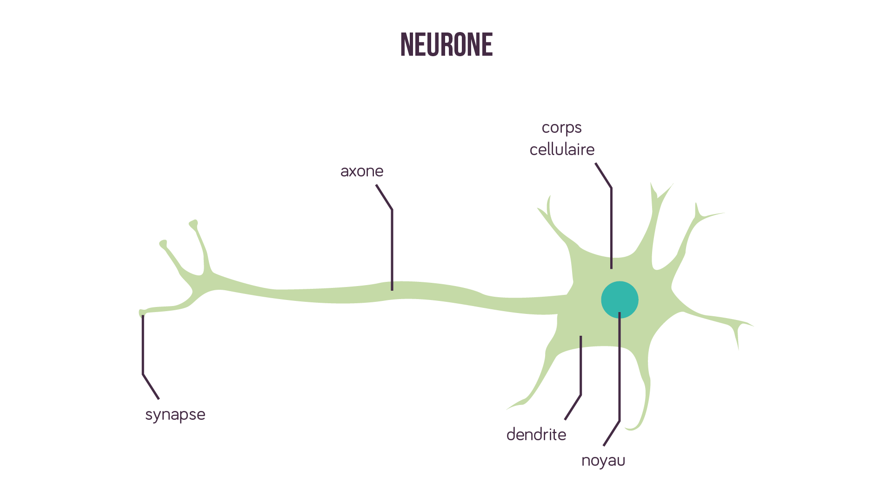
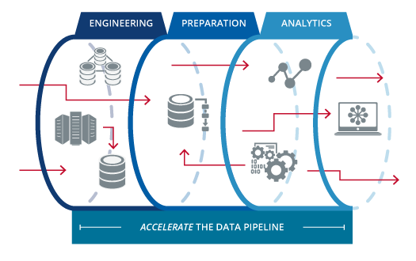

Initiation à la Data Science
Objectif du #meetup
- Comprendre ce qu'est La Data Science
- Main Skillset
- Comprendre les différents types de Machine Learning
- Différencier les postes orientés DATA (Data Scientist, Data Analyst, Data Eng...)
- Q/A
- Démo Live Coding
C'est quoi exactement ?

Les Tâches
Cycle de vie d'un projet
Exploration des données
Statistiques Descriptives (Analyse univariée & Bivariée)
-
Les Variables:
- Catégoriques
- Numériques
-
La Distributions des Variables:
- Symétrique ou Asymétrique
- Ou se trouve le centre
- Position de la distribution
- Dispersion/Propagation de la distribution
-
Les mesures de tendances centrales:
- Les Moyennes (moyenne réduite...)
- La Médiane
- Le Mode
-
Les paramètres de dispersions
- Létendue
- L'écart interquartile
- La Variance
- L'écart type
Data Visualization
-
Objectifs:
- Explorer les données (Voir la tendance, etc...)
- Interpreter et communiquer les graphes
Autres Types de visualisations & Diagrammes:
- Histogramme et tracé de densité
- Boîte à moustaches
- Diagramme en bâtons superposés
- Diagramme à barres côte à côte
- Graphe de Marimekko
- etc ...
Top Libraries de visualisation en Python
- Matplotlib
- Seaborn
- Ggplot
- Bokeh
- Pygal
- Plotly
- Altair
- Folium
- etc...
Apprentissage Automatique
Machine Learning ?

L'apprentissage automatique consiste à rendre les ordinateurs plus intelligents sans leur apprendre explicitement comment se comporter. Pour ce faire, il identifie des modèles dans les données.
Différents Types de Machine Learning:
- Machine Learning Supervisé
- Machine Learning Non Supervisé
- Machine Learning Semi Supervisé
Apprentissage Supervisé Vs. Non Supervisé
- Le besoin de données étiquetées dans l'apprentissage automatique supervisé.
- L'apprentissage supervisé est utilisé pour des tâches de classifications ou de prédictions.
- L'apprentissage non supervisé est utilisé pour comprendre les relations ou identifier les "patterns" dans les données.
- L'apprentissage non supervisé utilise des algorithmes pour analyser et regrouper des ensembles de données non étiquetés. Ces algorithmes découvrent des modèles cachés dans les données sans intervention humaine.
Algorithmes de Machine Learning Supervisé
- Nearest Neighbor
- Arbres de décision
- XGBoost
- Regression Linéaire
- Support Vector Machines (SVM)
- Naive Bayes
- Neural Networks
- etc...
Algorithmes de Machine Learning Non supervisé
- k-means clustering
- Réduction de dimensions
- Décomposition en valeurs singulières
- Auto-encoder
- etc...
Deep Learning ?
Inona koa izany ? ilaiko @ Fiainana ?
Deep Learning
Un type d'apprentissage automatique basé sur des réseaux de neurones artificiels dans lesquels plusieurs couches de traitement sont utilisées pour extraire des caractéristiques.
What ???
What ???
What ???
Plogeons dans les détails du réseau de neurones.
Un Neurone
Un Perceptron
Les Fonctions D'activations
Fonction Sigmoid
$$ \sigma(x) = \frac{\mathrm{1} }{\mathrm{1} + e^{-x} } $$

Fonction tanh
$$ \tanh(x) = \frac{e^x - e^{-x}}{e^x + e^{-x}} $$
Data Engineering
Data Engineering
L'ensemble des méthodes pour créer des systèmes qui collectent, gèrent et convertissent les données brutes (Big Data) en informations exploitable par les Data Scientist (like me 😎) et analyst.L'objectif ultime est de rendre les données accessibles afin que les autres agents puissent les utiliser pour évaluer et optimiser leurs performances.
-
Le Data Engineer se concentrent sur:
- La création des pipelines ETL/ELT Big Data.
- la préparation à la production des données et à la cohérence des données tels que les formats, la résilience...
- La mise à l'échelle et la sécurité (du data pipeline bien sûr).
- Les langages de programmation tels que Python, Scala, Java
Concevoir un Data Pipeline
Plus généralement la conception consiste à:- Identifier les sources de données.
- Extraire et fusionner les données provenant des différentes sources.
- Catégoriser les données et standardiser/normaliser.
- Nettoyer et filtrer des données.
- Charger les données vers la destination.
- Et automatiser le processus afin qu'il s'exécute en continu et/ou périodiquement...
Architecture de base

Data Pipeline
Top Technologies/outils pour les Data Engineer
- Python, Scala, Java
- Optimisation
- Apache Airflow / luigi / cron
- SQL
- Data Warehousing
- Apache Hive, Spark, Hadoop
- etc...
En résumé
- Data Analysis pour l'analyse de données.
- Data Science pour les analyses Descriptives et Predictives.
- Data Engineering pour rendre les Data Scientist/Analyst & Machine Learning Engineer heureux.
- Machine Learning Engineer pour tout ce qui est ML et DL.